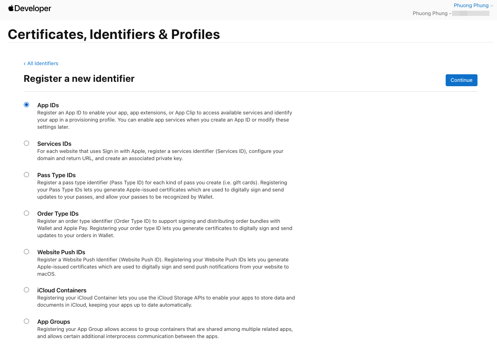
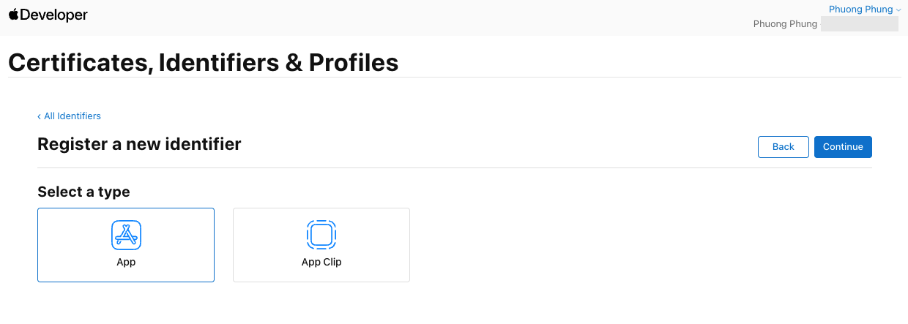
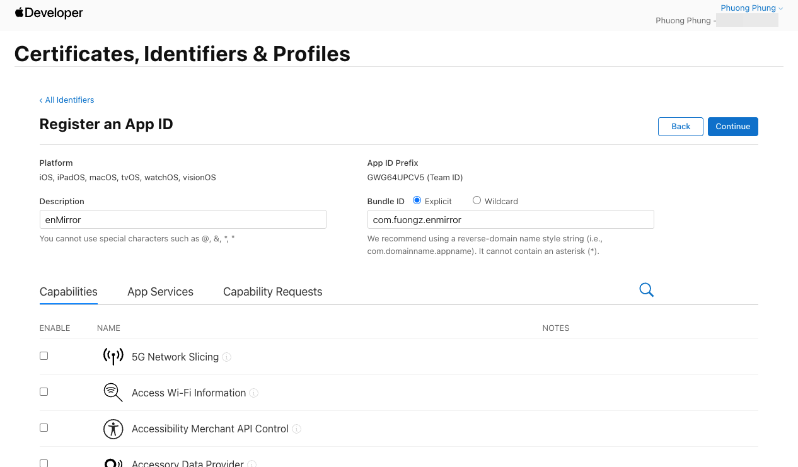
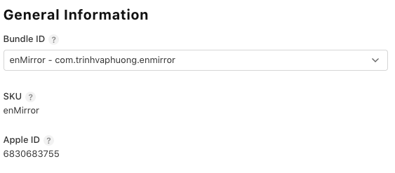

Hướng dẫn đưa enMirror lên App Store
Các bước theo đúng thứ tự, từ tài khoản developer tới lúc app có trên App Store, kèm trạng thái hiện tại của enMirror. Chi tiết kỹ thuật nằm trong docs/runbook.md và README.md.
Trạng thái 08/11/2026: enMirror không phát hành. App Review từ chối bản 1.0 theo guideline 4.3(b) (danh mục app gương đã bão hoà). Không gửi lại, không kháng nghị; app được cài từ mã nguồn (README › Running on an iPhone). Hướng dẫn dưới đây giữ lại để tham khảo.
Chuẩn bị Đã xong
Phải có tài khoản trả phí thì mới lên được TestFlight và App Store.
- Apple Developer Program (99 USD/năm): tài khoản Individual
Phuong Phung, teamGWG64UPCV5. Xem hạn ở developer.apple.com › Account › Membership details. - Xcode: vào ⌘, › Accounts và đăng nhập bằng Apple ID của team. Xcode dùng tài khoản này để tự tạo certificate và provisioning profile.
- mise: chạy
mise installtrong repo để cài SwiftLint và Periphery đúng version đã pin.
Bundle ID Đã xong
Mã định danh duy nhất của app. Một khi app đã lên App Store thì không đổi được nữa.
com.fuongz.enmirror sang com.trinhvaphuong.enmirror, cùng họ với com.trinhvaphuong.enchat. ID mới đã được đăng ký. Còn ID cũ thì xem mục Xoá app & Identifier.- Vào developer.apple.com › Identifiers và bấm +.
- Chọn App IDs rồi bấm Continue.

Chọn App IDs, mục đầu tiên trong danh sách. - Ở Select a type, chọn App (không chọn App Clip) rồi bấm Continue.

Chọn loại App. - Description:
enMirror. Bundle ID: chọn Explicit, nhậpcom.trinhvaphuong.enmirror. App ID Prefix sẽ tự hiệnGWG64UPCV5 (Team ID).
Điền Description và Bundle ID. Danh sách Capabilities bên dưới để nguyên, không tick mục nào. Ảnh này chụp lúc còn dùng ID cũ: hãy nhập com.trinhvaphuong.enmirror. - Capabilities: không bật gì. Camera và Photos chỉ cần câu xin quyền trong Info.plist, app đã có sẵn. Bấm Continue › Register.


Tạo app trên App Store Connect Đã xong
Đây là bản ghi app mà TestFlight và App Store sẽ dùng.
- Vào appstoreconnect.apple.com › Apps › + › New App.
- Điền các mục sau:
| Mục | Giá trị | Ghi chú |
|---|---|---|
| Platforms | iOS | |
| Name | enMirror | Không được trùng với app khác trên App Store. Nếu đã có người dùng thì đặt tên khác, ví dụ "enMirror – Ring Light Mirror". Tên dưới icon trên màn hình chính vẫn là enMirror. |
| Primary Language | English (U.S.) | Tiếng Việt thêm sau ở mục Localizations. |
| Bundle ID | com.trinhvaphuong.enmirror | Chọn trong danh sách. Nếu không thấy thì xem lại bước 2. |
| SKU | enMirror | Mã nội bộ, người dùng không thấy. Không trùng với SKU của app đã xoá. |
| User Access | Full Access | Chỉ ảnh hưởng tới người dùng khác trong team. Tài khoản Individual chỉ có một người nên chọn kiểu nào cũng như nhau. |
Sau khi bấm Create, kiểm tra ở App Information › General Information:


6830683755 là số trong link App Store sau này: apps.apple.com/app/id6830683755.Ký app trên máy Đã xong
Thông tin ký app không đưa lên git. Mỗi máy tự có một file riêng.
ios/Config/Signing.xcconfig(có trong git): chứa bundle ID và kiểu ký tự động.ios/Config/Local.xcconfig(gitignored): chứa team của máy này. Máy mới thì copy từ file mẫu:
cp ios/Config/Local.xcconfig.example ios/Config/Local.xcconfig
# rồi sửa: DEVELOPMENT_TEAM = GWG64UPCV5Kiểm tra: build cho iPhone rồi xem chữ ký có đúng team và bundle ID không:
mise run ios:device
codesign -dvv build/xcode-device/Build/Products/Debug-iphoneos/EnMirror.app | grep -E "Identifier|Team"-allowProvisioningUpdates), không cần tạo tay.Build & upload Mỗi bản build
Một lệnh lo hết: archive bản Release, đánh số build, ký và upload.
ios/scripts/ci-ios.sh # kiểm tra mọi thứ trước
mise run testflight:build # chỉ xuất .ipa vào build/testflight, không upload
mise run testflight:upload # archive + upload lên App Store Connect- Build number lấy theo giờ UTC (ví dụ
202611041230), nên không bao giờ trùng giữa các lần upload. - Version (
MARKETING_VERSION, đang là 1.0): tăng lên khi ra phiên bản mới. Sửa trong Xcode › target EnMirror › General › Version. - Export compliance: Info.plist đã có
ITSAppUsesNonExemptEncryption = NO, nên App Store Connect không hỏi về mã hoá mỗi lần upload.
testflight:build, rồi kéo file .ipa vào app Transporter (tải trên Mac App Store).TestFlight Chưa làm
Cho người thật dùng thử trước khi lên App Store.
- Chờ build xử lý xong, khoảng 10 đến 30 phút. Apple sẽ gửi email báo.
- Internal Testing (tối đa 100 người có tài khoản trong App Store Connect): TestFlight › Internal Testing › + tạo group › thêm tester › thêm build. Không cần Apple duyệt.
- External Testing (mời ai cũng được, qua email hoặc public link, tối đa 10.000 người): build đầu tiên của mỗi version phải qua Beta App Review, thường dưới một ngày.
- Tester cài app TestFlight trên iPhone rồi bấm vào lời mời.
Test Information (bắt buộc với External)
- Beta App Description: mô tả ngắn app làm gì và cần test phần nào.
- Feedback Email: email nhận góp ý từ tester.
- Review notes: "No login needed. The app uses only the front camera; it needs a real device."
Trang App Store Chưa làm
Những gì người dùng thấy trước khi tải app.
| Mục | Gợi ý cho enMirror |
|---|---|
| Subtitle (≤ 30 ký tự) | Ring light mirror, no ads |
| Category | Lifestyle (phụ: Photo & Video) |
| Keywords (≤ 100 ký tự) | mirror,makeup,ring light,selfie,zoom,beauty,compact,vanity |
| Description | Nêu rõ: miễn phí, không quảng cáo, chạy offline, có đèn viền, zoom, dừng hình, chế độ "như người khác nhìn". |
| Support URL | Bắt buộc. Có thể dùng trang GitHub hoặc một trang tĩnh. |
| Price | Free, tất cả quốc gia |
| Localizations | Thêm Vietnamese với mô tả tiếng Việt |
Ảnh chụp màn hình
- Bắt buộc bộ cho iPhone 6.9" (1320 × 2868 hoặc 1290 × 2796 px, dọc). Các kích thước nhỏ hơn App Store Connect tự co lại.
- Tối thiểu 1 ảnh, tối đa 10 ảnh. Nên có 4 đến 5 ảnh: gương, đèn viền, zoom, dừng hình, chế độ người khác nhìn.
- Simulator không có camera, nên ảnh phải chụp trên iPhone thật (nút nguồn + tăng âm lượng).
Quyền riêng tư Chưa làm
Phải khớp với những gì app thật sự làm. Khai sai là bị từ chối.
- App Privacy › Get Started › "No, we do not collect data from this app", tức nhãn Data Not Collected. Khớp với
ios/EnMirror/PrivacyInfo.xcprivacy. - Privacy Policy URL: bắt buộc, kể cả khi app không thu thập dữ liệu. Chỉ cần một trang ngắn: app không thu thập, không gửi dữ liệu đi đâu, camera chỉ hiển thị trên máy, ảnh chỉ được lưu khi người dùng bấm Lưu.
- Age Rating: trả lời "None" cho tất cả, kết quả là 4+.
Gửi duyệt & phát hành Chưa làm
App Review thường xong trong 1 đến 2 ngày.
- Ở trang version 1.0: chọn build ở mục Build.
- App Review Information: thông tin liên hệ. Không cần tài khoản demo vì app không có đăng nhập. Notes: "Mirror app using the front camera. No account, no network, no ads."
- Version Release: chọn Manually release để tự bấm phát hành sau khi được duyệt.
- Bấm Add for Review › Submit.
Checklist trước khi gửi
- Đã test trên iPhone thật: camera, đèn viền, zoom, dừng hình, lưu ảnh, lật hình
- Câu xin quyền camera và Photos rõ ràng, có cả tiếng Anh và tiếng Việt
- Từ chối quyền camera thì app hiện hướng dẫn mở Cài đặt, không bị crash
- Ảnh chụp màn hình đúng kích thước, đúng với app hiện tại
- Đã có Privacy Policy URL và Support URL
- App Privacy là Data Not Collected, Age Rating là 4+
-
ios/scripts/ci-ios.shpass
Bản cập nhật Mỗi phiên bản
- Tăng Version (1.0 → 1.1) trong Xcode.
ios/scripts/ci-ios.shrồimise run testflight:upload.- Thử qua TestFlight.
- App Store Connect › + cạnh iOS App › nhập version mới › viết What's New › chọn build › Submit.
Xoá app & Identifier Dọn ID cũ
Dùng khi đổi Bundle ID hoặc tạo nhầm. Ở đây là để dọn com.fuongz.enmirror.
1. Xoá app trên App Store Connect (nếu đã tạo với ID cũ)
- Vào App Store Connect › Apps và mở app đó.
- Mở tab App Store › ở cột trái, dưới General, chọn App Information.
- Kéo xuống cuối trang, bấm Remove App rồi xác nhận.
- Chỉ xoá được app chưa từng phát hành. App đã lên App Store thì chỉ gỡ khỏi bán được, ở mục Pricing and Availability.
- Nếu app đã có build TestFlight, có thể phải bấm Expire các build đó trước, ở TestFlight › chọn build.
- Sau khi xoá, SKU và Bundle ID của app đó không dùng lại được cho app mới. Tên app được trả lại để đặt cho app khác, nhưng có thể phải chờ một thời gian.
2. Xoá Identifier cũ
- Vào developer.apple.com › Identifiers.
- Bấm vào dòng
com.fuongz.enmirrorđể mở trang Edit your App ID Configuration. - Bấm Remove ở góc phải trên, rồi xác nhận.
- Các provisioning profile tạo cho ID này sẽ bị vô hiệu theo. Xcode tự tạo profile mới cho ID mới ở lần build sau.
- Nếu báo lỗi đang được dùng: quay lại phần 1, app với ID này vẫn còn trên App Store Connect.
3. Dọn trên máy
- iPhone: bản cài thử trước đây dùng ID cũ nên là một app riêng, cùng tên enMirror. Nhấn giữ icon › Xoá app. Bản build mới với ID mới sẽ cài thành một app khác.
- Mac (không bắt buộc): profile cũ nằm trong
~/Library/Developer/Xcode/UserData/Provisioning Profiles. Để lại cũng không ảnh hưởng gì.
Xử lý lỗi
| Triệu chứng | Cách xử lý |
|---|---|
missing Xcode-Token trong log build | Xcode › Settings › Accounts: sign out rồi sign in lại Apple ID. |
No Account for Team / No profiles for 'com.trinhvaphuong.enmirror' | Kiểm tra ios/Config/Local.xcconfig có DEVELOPMENT_TEAM, và Xcode đã đăng nhập đúng tài khoản. |
iPhone hiện unavailable | Mở khoá máy, cắm cáp hoặc dùng cùng Wi-Fi, bật Developer Mode (Cài đặt › Quyền riêng tư & Bảo mật). |
| Upload báo build number đã tồn tại | Chạy lại script: build number theo phút UTC nên lần sau sẽ khác. |
| Bị từ chối vì thiếu mô tả quyền (Guideline 5.1.1) | Sửa câu xin quyền trong InfoPlist.xcstrings và build setting, nói rõ dùng camera để làm gì. |
| Bị từ chối vì giống app khác (Guideline 4.3, spam) | Nhấn mạnh điểm khác biệt trong Review Notes: miễn phí, không quảng cáo, đèn viền chỉnh được tông màu, chạy offline. |
Nhật ký cập nhật
| Ngày | Thay đổi |
|---|---|
| 2026-11-04 | Đã tạo app trên App Store Connect (SKU enMirror, Apple ID 6830683755), thêm ảnh General Information. |
| 2026-11-04 | Thêm mục Xoá app & Identifier. |
| 2026-11-04 | Đổi Bundle ID sang com.trinhvaphuong.enmirror, cần đăng ký lại. |
| 2026-11-04 | Thêm ảnh minh hoạ cho bước Bundle ID (3 màn hình). |
| 2026-11-04 | Tạo hướng dẫn. Đã xong: tài khoản developer, Bundle ID, ký app qua xcconfig, script TestFlight. |